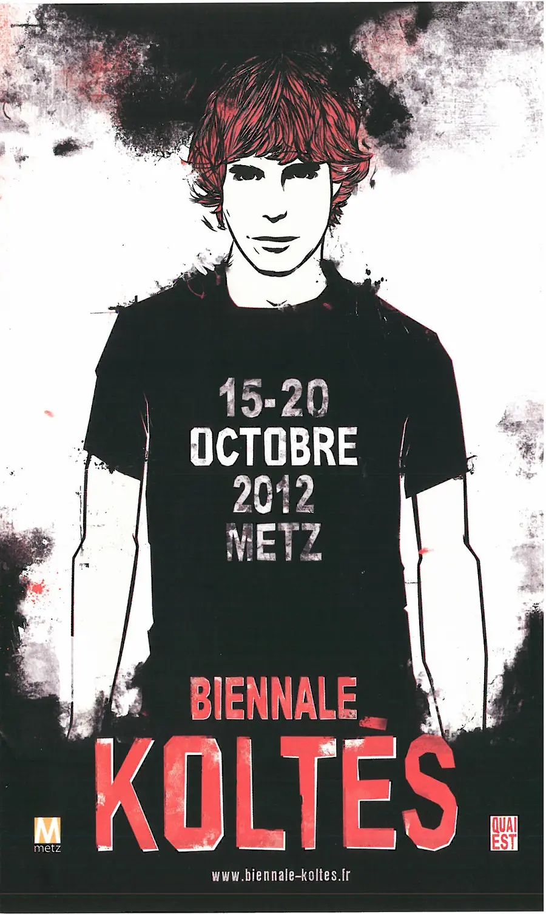
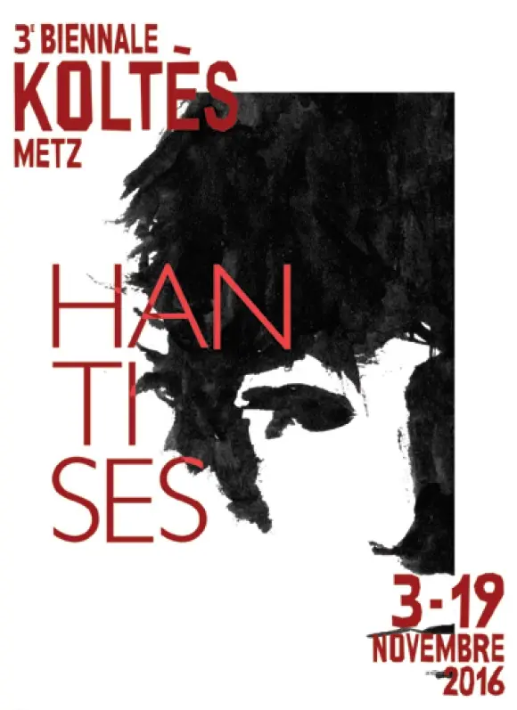

Biennales
De l’intégrale de 2009 à « Voyages » en 2025, et rendez-vous en 2027 : une histoire en dix éditions.
En 2009, l’association Quai Est a voulu rendre hommage à l’œuvre de Koltès par des manifestations scientifiques et culturelles, en particulier une semaine de représentations consacrée à toute son œuvre.
Le succès de cette « intégrale » a conduit à la Biennale, organisée tous les deux ans, et à des inter-biennales plus modestes entre deux éditions. Chaque page d’édition rassemble programme, artistes, affiche et photos.
Frise chronologique

L’intégrale Koltès
À l’occasion des vingt ans de la disparition de l’auteur, l’association Quai Est organise une semaine de représentations couvrant l’ensemble de l’œuvre, avec tables rondes et journées d’études. Le succès pousse à renouveler l’aventure tous les deux ans.
Voir l’édition →
1re Biennale Koltès
Première édition sous le nom de Biennale : spectacles en français et en anglais, colloque international, ateliers avec des jeunes et exposition.
Voir l’édition →2e Biennale Koltès
Violence et désir : fanfare d’ouverture, installations, journée d’études internationale, hommage cinématographique à Patrice Chéreau et créations avec des compagnies de la région.
Voir l’édition →Inter-biennale 2015
Une conférence-débat sur le comique dans Le Retour au désert, une soirée de théâtre à Thionville avec transport offert, et une lecture de Léonora Miano au FRAC Lorraine.
Voir l’édition →
3e Biennale — « Hantises »
Spectres, revenants et fantômes dans le théâtre de Koltès et le théâtre contemporain : colloque, création à l’Opéra-Théâtre de Metz et spectacles dans plusieurs villes de Moselle.
Voir l’édition →Inter-biennale 2017 — Québec
Cap sur la dramaturgie québécoise contemporaine : deux spectacles, une conférence-débat et une exposition photo consacrée à la Biennale 2016.
Voir l’édition →
4e Biennale — « Écritures de l’exil »
Lectures, spectacles, cinéma et rencontres autour de l’exil et des frontières, dans des médiathèques, musées et lieux d’art de Metz et du Val de Fensch, prolongés au printemps 2019.
Voir l’édition →
Prix Koltès « Prolonger le geste » #1
Un concours d’écriture dramatique pour les écritures contemporaines, 147 textes reçus, quatre finalistes et un marathon de lectures publiques à Metz.
Voir l’édition →
6e Biennale « Qui ? Koltès ! » + Prix #2
Soirée inaugurale à l’Opéra-Théâtre, création de la pièce lauréate du 1er Prix, marathon de lectures du Prix #2 et spectacles hors les murs.
Voir l’édition →
7e Biennale — « Voyages »
Dix rendez-vous entre théâtre, musique, chant, cinéma et lectures, plus le marathon du 3e Prix Koltès : voyager dans l’univers de Koltès, de ses périples à la traduction de ses textes.
Voir l’édition →Biennale Koltès #8
Rendez-vous du vendredi 12 au samedi 27 novembre 2027. La programmation sera annoncée par l’association ; le Prix Koltès « Envie de futur » y présentera ses finalistes.
Voir les dates →Les affiches

Les éditions
Biennale Koltès #8
12 → 27 novembre 2027
Voir les dates7e Biennale — « Voyages »
14 → 28 novembre 2025
Voir l’édition6e Biennale « Qui ? Koltès ! » + Prix #2
17 nov. → 2 déc. 2023
Voir l’éditionPrix Koltès « Prolonger le geste » #1
Janvier → novembre 2021
Voir l’édition4e Biennale — « Écritures de l’exil »
13 → 17 nov. 2018 · 27 mars → 6 avril 2019
Voir l’éditionInter-biennale 2017 — Québec
Automne 2017
Voir l’édition3e Biennale — « Hantises »
3 → 19 novembre 2016
Voir l’éditionInter-biennale 2015
Novembre 2015
Voir l’édition2e Biennale Koltès
20 → 26 octobre 2014
Voir l’édition1re Biennale Koltès
15 → 20 octobre 2012
Voir l’éditionL’intégrale Koltès
16 → 24 octobre 2009
Voir l’édition